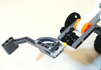

Slagarm© 2018, ProtoIt Platform: MINDSTORMS |  |
Beschrijving:
De slagarm is een aanvulling op de buggy. Let erop bij het bevestigen van de slagarm, dat deze zich niet in het zichtveld van de afstandsensor mag bevinden.
Aansluiten op poort A.
Onderdelen:
Slagarm
| Duur linksom (msec) | Voorinstelling om een slag linksom te maken. Stel de tijd in voor een perfect rondje. Standaard op 274 milliseconden ingesteld. |
| Duur rechtsom (msec) | Voorinstelling om een slag linksom te maken. Stel de tijd in voor een perfect rondje. Standaard op 272 milliseconden ingesteld. |
| Slag | Gebruik één van de Constante signalen onder het kopje SLAG. |
| Start wanneer? | Gebruik het constante signaal Direct of sleep een uitgezonden signaal hiernaar toe. |
| Klaar | Wordt uitgezonden als de slagarm een slag heeft uitgevoerd. (Dit kan maar één keer per stap.) |